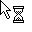
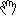

QCursor¶
Detailed Description¶
The
PySide2.QtGui.QCursorclass provides a mouse cursor with an arbitrary shape.This class is mainly used to create mouse cursors that are associated with particular widgets and to get and set the position of the mouse cursor.
Qt has a number of standard cursor shapes, but you can also make custom cursor shapes based on a
PySide2.QtGui.QBitmap, a mask and a hotspot.To associate a cursor with a widget, use
QWidget.setCursor(). To associate a cursor with all widgets (normally for a short period of time), useQGuiApplication.setOverrideCursor().To set a cursor shape use
QCursor.setShape()or use thePySide2.QtGui.QCursorconstructor which takes the shape as argument, or you can use one of the predefined cursors defined in theQt.CursorShapeenum.If you want to create a cursor with your own bitmap, either use the
PySide2.QtGui.QCursorconstructor which takes a bitmap and a mask or the constructor which takes a pixmap as arguments.To set or get the position of the mouse cursor use the static methods
QCursor.pos()andQCursor.setPos().Note
It is possible to create a
PySide2.QtGui.QCursorbeforePySide2.QtGui.QGuiApplication, but it is not useful except as a place-holder for a realPySide2.QtGui.QCursorcreated afterPySide2.QtGui.QGuiApplication. Attempting to use aPySide2.QtGui.QCursorthat was created beforePySide2.QtGui.QGuiApplicationwill result in a crash.
A Note for X11 Users¶
On X11, Qt supports the Xcursor library, which allows for full color icon themes. The table below shows the cursor name used for each
Qt.CursorShapevalue. If a cursor cannot be found using the name shown below, a standard X11 cursor will be used instead. Note: X11 does not provide appropriate cursors for all possibleQt.CursorShapevalues. It is possible that some cursors will be taken from the Xcursor theme, while others will use an internal bitmap cursor.
Shape Qt.CursorShapeValueCursor Name Shape Qt.CursorShapeValueCursor Name Qt.ArrowCursorleft_ptrQt.SizeVerCursorsize_verQt.UpArrowCursorup_arrowQt.SizeHorCursorsize_horQt.CrossCursorcrossQt.SizeBDiagCursorsize_bdiagQt.IBeamCursoribeamQt.SizeFDiagCursorsize_fdiagQt.WaitCursorwaitQt.SizeAllCursorsize_all Qt.BusyCursorleft_ptr_watchQt.SplitVCursorsplit_vQt.ForbiddenCursorforbiddenQt.SplitHCursorsplit_hQt.PointingHandCursorpointing_hand Qt.OpenHandCursoropenhandQt.WhatsThisCursorwhats_thisQt.ClosedHandCursorclosedhandQt.DragMoveCursordnd-moveormoveQt.DragCopyCursordnd-copyorcopyQt.DragLinkCursordnd-linkorlink


-
class
PySide2.QtGui.QCursor¶ -
class
PySide2.QtGui.QCursor(shape) -
class
PySide2.QtGui.QCursor(bitmap, mask[, hotX=-1[, hotY=-1]]) -
class
PySide2.QtGui.QCursor(cursor) -
class
PySide2.QtGui.QCursor(pixmap[, hotX=-1[, hotY=-1]]) Parameters: - shape –
PySide2.QtCore.Qt.CursorShape - pixmap –
PySide2.QtGui.QPixmap - mask –
PySide2.QtGui.QBitmap - cursor –
PySide2.QtGui.QCursor - hotX –
PySide2.QtCore.int - bitmap –
PySide2.QtGui.QBitmap - hotY –
PySide2.QtCore.int
Constructs a cursor with the default arrow shape.
Constructs a cursor with the specified
shape.See
Qt.CursorShapefor a list of shapes.See also
Constructs a custom bitmap cursor.
bitmapandmaskmake up the bitmap.hotXandhotYdefine the cursor’s hot spot.If
hotXis negative, it is set to thebitmap().width()/2. IfhotYis negative, it is set to thebitmap().height()/2.The cursor
bitmap(B) andmask(M) bits are combined like this:- B=1 and M=1 gives black.
- B=0 and M=1 gives white.
- B=0 and M=0 gives transparent.
- B=1 and M=0 gives an XOR’d result under Windows, undefined results on all other platforms.
Use the global Qt color
Qt.color0to draw 0-pixels andQt.color1to draw 1-pixels in the bitmaps.Valid cursor sizes depend on the display hardware (or the underlying window system). We recommend using 32 x 32 cursors, because this size is supported on all platforms. Some platforms also support 16 x 16, 48 x 48, and 64 x 64 cursors.
See also
QBitmap.QBitmap()QBitmap.setMask()Constructs a copy of the cursor
c.Constructs a custom pixmap cursor.
pixmapis the image. It is usual to give it a mask (set usingQPixmap.setMask()).hotXandhotYdefine the cursor’s hot spot.If
hotXis negative, it is set to thepixmap().width()/2. IfhotYis negative, it is set to thepixmap().height()/2.Valid cursor sizes depend on the display hardware (or the underlying window system). We recommend using 32 x 32 cursors, because this size is supported on all platforms. Some platforms also support 16 x 16, 48 x 48, and 64 x 64 cursors.
See also
QPixmap.QPixmap()QPixmap.setMask()- shape –
-
PySide2.QtGui.QCursor.bitmap()¶ Return type: PySide2.QtGui.QBitmapReturns the cursor bitmap, or 0 if it is one of the standard cursors.
-
PySide2.QtGui.QCursor.hotSpot()¶ Return type: PySide2.QtCore.QPointReturns the cursor hot spot, or (0, 0) if it is one of the standard cursors.
-
PySide2.QtGui.QCursor.mask()¶ Return type: PySide2.QtGui.QBitmapReturns the cursor bitmap mask, or 0 if it is one of the standard cursors.
-
PySide2.QtGui.QCursor.__ne__(rhs)¶ Parameters: rhs – PySide2.QtGui.QCursorReturn type: PySide2.QtCore.bool
-
PySide2.QtGui.QCursor.__eq__(rhs)¶ Parameters: rhs – PySide2.QtGui.QCursorReturn type: PySide2.QtCore.bool
-
PySide2.QtGui.QCursor.pixmap()¶ Return type: PySide2.QtGui.QPixmapReturns the cursor pixmap. This is only valid if the cursor is a pixmap cursor.
-
static
PySide2.QtGui.QCursor.pos(screen)¶ Parameters: screen – PySide2.QtGui.QScreenReturn type: PySide2.QtCore.QPointReturns the position of the cursor (hot spot) of the
screenin global screen coordinates.You can call
QWidget.mapFromGlobal()to translate it to widget coordinates.See also
PySide2.QtGui.QCursor.setPos()QWidget.mapFromGlobal()QWidget.mapToGlobal()
-
static
PySide2.QtGui.QCursor.pos() Return type: PySide2.QtCore.QPointReturns the position of the cursor (hot spot) of the primary screen in global screen coordinates.
You can call
QWidget.mapFromGlobal()to translate it to widget coordinates.Note
The position is queried from the windowing system. If mouse events are generated via other means (e.g., via QWindowSystemInterface in a unit test), those fake mouse moves will not be reflected in the returned value.
Note
On platforms where there is no windowing system or cursors are not available, the returned position is based on the mouse move events generated via QWindowSystemInterface.
See also
PySide2.QtGui.QCursor.setPos()QWidget.mapFromGlobal()QWidget.mapToGlobal()QGuiApplication.primaryScreen()
-
static
PySide2.QtGui.QCursor.setPos(x, y)¶ Parameters: - x –
PySide2.QtCore.int - y –
PySide2.QtCore.int
Moves the cursor (hot spot) of the primary screen to the global screen position (
x,y).You can call
QWidget.mapToGlobal()to translate widget coordinates to global screen coordinates.See also
PySide2.QtGui.QCursor.pos()QWidget.mapFromGlobal()QWidget.mapToGlobal()QGuiApplication.primaryScreen()- x –
-
static
PySide2.QtGui.QCursor.setPos(p) Parameters: p – PySide2.QtCore.QPointThis is an overloaded function.
Moves the cursor (hot spot) to the global screen position at point
p.
-
static
PySide2.QtGui.QCursor.setPos(screen, x, y) Parameters: - screen –
PySide2.QtGui.QScreen - x –
PySide2.QtCore.int - y –
PySide2.QtCore.int
Moves the cursor (hot spot) of the
screento the global screen position (x,y).You can call
QWidget.mapToGlobal()to translate widget coordinates to global screen coordinates.Note
Calling this function results in changing the cursor position through the windowing system. The windowing system will typically respond by sending mouse events to the application’s window. This means that the usage of this function should be avoided in unit tests and everywhere where fake mouse events are being injected via QWindowSystemInterface because the windowing system’s mouse state (with regards to buttons for example) may not match the state in the application-generated events.
Note
On platforms where there is no windowing system or cursors are not available, this function may do nothing.
See also
PySide2.QtGui.QCursor.pos()QWidget.mapFromGlobal()QWidget.mapToGlobal()- screen –
-
static
PySide2.QtGui.QCursor.setPos(screen, p) Parameters: - screen –
PySide2.QtGui.QScreen - p –
PySide2.QtCore.QPoint
This is an overloaded function.
Moves the cursor (hot spot) to the global screen position of the
screenat pointp.- screen –
-
PySide2.QtGui.QCursor.setShape(newShape)¶ Parameters: newShape – PySide2.QtCore.Qt.CursorShapeSets the cursor to the shape identified by
shape.See
Qt.CursorShapefor the list of cursor shapes.See also
-
PySide2.QtGui.QCursor.shape()¶ Return type: PySide2.QtCore.Qt.CursorShapeReturns the cursor shape identifier. The return value is one of the
Qt.CursorShapeenum values (cast to an int).See also
-
PySide2.QtGui.QCursor.swap(other)¶ Parameters: other – PySide2.QtGui.QCursorSwaps this cursor with the
othercursor.
© 2018 The Qt Company Ltd. Documentation contributions included herein are the copyrights of their respective owners. The documentation provided herein is licensed under the terms of the GNU Free Documentation License version 1.3 as published by the Free Software Foundation. Qt and respective logos are trademarks of The Qt Company Ltd. in Finland and/or other countries worldwide. All other trademarks are property of their respective owners.